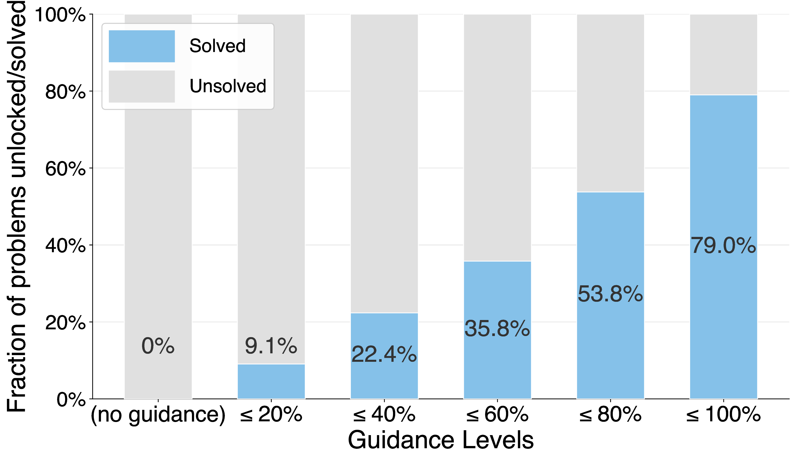
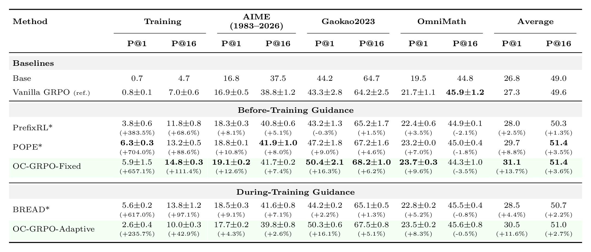

The learning cliff
Reinforcement learning with verifiable rewards improves LLM reasoning only on problems the model already solves at least occasionally. GRPO learns from within-group reward variance: some rollouts succeed, others fail, and the successful ones are reinforced relative to the failures. On a problem where every rollout fails, rewards are uniformly zero, the group-relative advantage is zero, and the gradient is exactly zero, no matter how long training continues. The training loop keeps resampling those problems epoch after epoch, spending GPU hours to learn nothing. We call this the learning cliff.
Privileged information breaks the cliff
A tested workaround is privileged information: auxiliary context, available during training but not at deployment, added to the prompt so that correct continuations become reachable. We construct the sharpest version of the setting: from MATH Levels 3-5 we keep the 595 problems on which Qwen2.5-7B-Instruct fails all 64 sampled attempts, so vanilla GRPO receives no learning signal at all by construction. Prepending a prefix of the reference solution lifts the expected verifier reward on this pool from 0.09 to 0.79.

But guided rollouts are off-context
Here is the subtle part. Guided methods sample rollouts under the guided prompt and then compute the policy-gradient update as if sampling and evaluation distributions matched. The PPO-style ratio carries the guided prompt in both numerator and denominator, so the update optimizes a guided objective, while deployment serves the original prompt with no guidance in sight. We call this mismatch the off-context problem. Masking the guidance tokens out of the loss does not fix it: masking changes which tokens receive gradient, not what they condition on.
The mismatch is not cosmetic. Training on guided rollouts without correction biases the gradient, and we show the bias can accumulate: gradient norms spike, the log-probability gap between the guided and unguided contexts widens, and in some runs the reward collapses outright mid-training.
One ratio fixes it
OC-GRPO removes the bias with a textbook idea: importance sampling, the standard correction for estimating under one distribution while sampling from another. Replace the probability ratio in the GRPO objective with one whose numerator conditions on the original prompt and whose denominator conditions on the guided prompt that actually produced the token:
x is the original prompt, g(x) the guided prompt. With no guidance, g(x) = x and the update is exactly vanilla GRPO.
The corrected estimator is unbiased for the unguided objective, and the variance of the correction scales with the length of the guidance rather than the rollout, which yields a clean operating rule: use the shortest guidance that breaks the cliff. In practice it is a one-line change to GRPO. No reward shaping, no entropy control, no auxiliary SFT loss. The overhead is a single no-grad forward pass per step, about 5.5% of step time at 7B, and nothing at inference.
The ratio assigns credit by behavior
The correction is more than bookkeeping. We prove that, averaged over successful guided rollouts, the correction factor equals p(x)/q(x) < 1, and over failed ones (1−p(x))/(1−q(x)) > 1, where p and q are the success rates under the original and guided prompts.
A success that leaned on the hint is discounted in proportion to how much it leaned. A failure that persists despite the hint draws an amplified penalty. The update reinforces solving rather than hint-following, with no extra design choices.
Results
On Qwen2.5-7B-Instruct (LoRA, veRL, 4 epochs, 16 rollouts per prompt, 3 seeds), evaluated on AIME (1983-2026), Gaokao2023 and OmniMath: OC-GRPO reaches 31.1 average Pass@1 against 27.3 for vanilla GRPO, a 13.7% relative gain, ahead of every guided baseline under an identical protocol. Pass@16 rises as well, from 49.6 to 51.4 on the held-out benchmarks and from 7.0 to 14.8 on the hard training pool, so the gains do not come from collapsing the model's sampling diversity.

The pattern sharpens at smaller scale. Guided methods without the correction rely on back-generalization, the hope that improvement under the guided prompt transfers to the unguided one. At 7B a large model absorbs much of the mismatch. At 3B and 1.5B it does not: uncorrected guided baselines fall below vanilla GRPO, by as much as 7.2%, while OC-GRPO retains gains of +7.2% and +10.2%. The correction matters most exactly where capacity is scarcest.
Takeaway
However you generate guidance, solution prefixes, tiered hints, self-generated scaffolds, or a teacher model, the off-context problem comes with it, and so does the fix. The same applies to agentic RLVR, where the privileged context is a tool result or an oracle subgoal. Privileged information should decide where the model explores, not which objective you optimize. One importance ratio keeps those two jobs apart.
Citation
@article{agrawal2026off,
title={Off-Context GRPO: Learning to Reason on Hard Problems
using Privileged Information},
author={Agrawal, Priyank and Samanta, Ankur and Ghasemlou, Shervin
and Vidolov, Boris and Bhandari, Jalaj and Asadi, Kavosh
and Jiang, Daniel and Modi, Aditya},
journal={arXiv preprint arXiv:2607.19313},
year={2026}
}